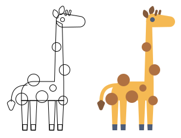
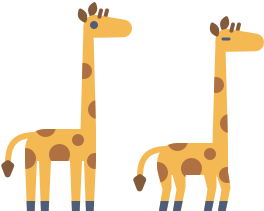

Recently, a colleague asked me if there is a way to customize an input caret using CSS. I knew you could change the color of it, but it got me thinking if we could completely replace it. The problem seemed interesting to solve.
But before we jump into the implementation, allow me to show you what I built in the end.
Disclaimer #
Please be aware that this is something I hacked together for fun, and it probably isn't accessible. You shouldn't use it in production. But I do hope it will inspire you to explore creative ways to use CSS and JavaScript.
Idea #
Only the caret's color can be customized using CSS, which means we need to replace it with an element rendered at the exact same position. To do so, we need a way to determine the caret's position.
Luckily, the input has selectionstart and selectionend properties. They represent the start and end positions of the text selection. If they have the same value, that means the caret is right there.
But it's somewhat difficult to measure the exact pixel value of selectionstart because it depends on the text size. However, we can cheat a little.
Instead of trying to measure and position the caret absolutely, I decided to clone the text from the input and position the custom caret right after it. The clone needs to be updated every time the caret moves or when the text in the input has changed. Finally, we need to put the clone over the input, and hopefully, things will align.
It is not the first time I've overlapped text over an input like this. Just a few years ago, this was a common way to create input placeholders.
Anatomy #
If we have an input with the text Hello Friends! and the caret positioned right after the word Hello, our HTML structure should look something like this:
<!-- Original input -->
<input value="Hello World" />
<!-- Clone of the input's content with the custom caret squeezed in -->
<div>
<span>Hello</span>
<span class="caret"><!-- Giraffe goes here --></span>
<span> Friends!</span>
</div>
As the caret moves, we need to keep copying the text from the input to the clone. Text before the caret is copied to the first span, and text after is copied to the last span.
The caret element is squeezed between these two spans, which makes it move and mimic the real caret's movement.
Hopefully a demonstration will make it more obvious and easier to understand:
Tracking caret movement #
The only thing left is to find a way to update the clone as the real caret moves in the input.
Firefox has an experimental event called selectionchange. It fires when caret is moved, which is exactly what we need. Unfortunately, no other browser supports it. Since I never intended to use this code in production, I piled up all the events I could think of.
To hide and show the custom caret, we'll have to add focus and blur events (even when selectionchange is supported).
The final code looks like this:
if (isSelectionChangeSupported()) {
input.addEventListener("selectionchange", update);
} else {
input.addEventListener("keydown", update);
input.addEventListener("keyup", update);
input.addEventListener("change", update);
input.addEventListener("click", update);
input.addEventListener("touchend", update);
}
input.addEventListener("focus", update);
input.addEventListener("blur", () => {
wrapper.classList.remove("giraffe--caret-visible");
});
None of these events are perfect, and there is a slight delayWrapping the update method in requestAnimationFrame fixed the delay.. Personally, I don't mind it since the whole thing was meant to be fun and goofy.
And that is how one can add a dancing giraffe to an input. The implementation had a couple more of small gotchas, and if you are interested in them, I advise you to play with the code on CodePen.
Lion? #
Another colleague had a brilliant idea that I never implemented:
Okay, hear me out, add a lion that gets closer to the giraffe as you reach the character limit for the text field
If you ever implement something like this, please let me know.
Giraffe illustration #
I searched for a simple giraffe drawing and found a very cute one, but I needed one with a longer and thinner neck to fit better as a caret. I redrew it for my caret purposes, and here are the source SVG files. Feel free to download and use them in your projects.
Base image which might be easier to customize:

Animation keyframes:

I must admit, it took me quite a while to finish this post, spanning over a month. When posts stretch out like this one did, I find myself hesitating to publish them at all.
However, I believe there is value in sharing shorter "code nuggets," and in the future, I'll aim to do that more instead of always striving for elaborate and polished essays.
In the end, I hope you had just as much fun reading this post as I did creating it.